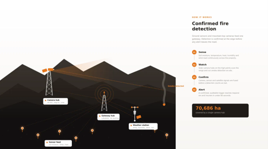

INTEGRATED WILDFIRE EARLY WARNING
Support faster,
more informed response.
Caracal Environmental is developing an integrated wildfire intelligence platform that combines AI-enabled camera detection, field sensors and satellite data to identify fires earlier, understand changing conditions and support faster, more informed response.
Explore the systemTHE CHALLENGE
In wildfire response, minutes matter.
Fire is a natural part of the fynbos landscape, but climate change is creating hotter, drier conditions that can increase the likelihood of severe fire weather and make wildfires more difficult to manage.
Across the Western Cape, fires can move quickly through dense fynbos and across mountainous, remote and difficult-to-access terrain. By the time smoke is reported and responders reach the area, a small ignition can already have developed into a much larger fire.
Early detection matters, but knowing that a fire has started is only part of the picture. Responders also need to know where it is, how conditions are changing and where it may pose the greatest risk.
Caracal is being developed to bring this information together, giving fire managers a clearer picture of what is happening across the landscape and supporting faster, more informed response.
THE CARACAL SYSTEM
One platform. Multiple layers of fire intelligence.
The Caracal system combines three complementary sources of environmental information — AI-enabled cameras, ground sensors and satellite data — through a central wildfire intelligence dashboard.
Each technology has a different role. Cameras provide early visual detection, sensors provide local ground-truth information, and satellite data provides the broader landscape risk picture. Together, they provide a more complete view of fire risk, detection and response.
Detect
AI-enabled cameras continuously monitor the landscape and identify emerging smoke plumes as an early indication of fire.
Alert
When a potential fire is identified, alerts are communicated rapidly to relevant landowners, fire managers and response teams.
Ground-truth
Field sensors help validate camera detections and provide local information about changing conditions as a fire develops.
Respond
Camera, sensor and satellite information is brought together through the Caracal dashboard to support coordinated, real-time response.
HOW IT WORKS
From landscape observation to real-time action.
The Caracal system is designed around a simple principle: no single technology provides the complete fire picture.

AI Camera Network
Cameras continuously scan high-risk landscapes from strategic viewpoints.
AI-based image recognition identifies emerging smoke plumes and flags potential ignitions for rapid alerting.
Field Sensors
Environmental sensors provide local information from within the landscape.
These observations can validate camera detections and help track changing conditions as a fire develops.
Satellite Data
Satellite-derived environmental information provides the broader landscape-scale fire-risk picture.
This helps identify where conditions may favour fire ignition and spread before an incident occurs.
Caracal Dashboard
Camera, sensor and satellite information is brought together into a single operational platform.
Users can see alerts, fire conditions, risk information and response resources in one place.
EARLY DETECTION
AI eyes on the landscape.
The camera network forms the primary early-warning layer of the Caracal system.
Cameras positioned at strategic viewpoints continuously monitor the surrounding landscape. Computer-vision models are used to identify the visual signature of emerging smoke plumes.
When a potential fire is detected, the system generates an alert that can be reviewed and communicated quickly to the people responsible for responding.
GROUND-TRUTH
Knowing what is happening on the ground.
Cameras provide rapid visual detection, while field sensors add another layer of information from within the landscape.
Measurements such as temperature, smoke, carbon monoxide and wind can provide more accurate, local information about conditions close to a detected fire.
This sensor-derived information can help validate camera detections and provide responders with a better understanding of how conditions are changing as the fire develops.
LANDSCAPE FIRE RISK
Understanding where risk is building.
Early warning starts before ignition. Satellite-derived environmental information provides a landscape-scale picture of changing conditions and helps identify where fire risk may be increasing.
Once a potential fire is detected by the camera network, field sensors provide more accurate, real-time information from the ground. These observations can help validate camera detections, confirm local fire conditions and track how conditions change as a fire develops.
By combining satellite-based risk information with AI camera detection and on-the-ground sensor data, Caracal aims to provide a more complete picture of fire risk and active fire conditions — supporting faster, more informed response.
THE CARACAL DASHBOARD
One operational picture.
The Caracal dashboard brings together the information needed to understand and respond to a developing fire.
Alongside camera detections, ground-sensor observations and satellite-derived fire-risk information, the dashboard will provide practical information about the landscape, access routes, available water and firefighting capacity.
It will also provide a shared platform for landowners and fire-management teams to communicate and coordinate their response.
Live Fire Alerts
Potential fires detected by the camera network are flagged quickly, giving landowners and responders an earlier indication of where action may be needed.
Fire Location & Conditions
Camera and sensor data help locate a detected fire, validate the initial alert and provide on-the-ground information as conditions change.
Access & Road Conditions
Roads and access routes are mapped alongside information on road quality, helping responders identify practical routes to reach a fire.
Water & Firefighting Resources
Nearby water sources and available firefighting resources can be viewed alongside the fire, helping teams understand what capacity is available and where.
Fire Risk
Satellite and environmental data provide the wider landscape context, highlighting areas where conditions may favour ignition or fire spread.
Communication & Coordination
A shared view helps neighbouring landowners, Fire Protection Associations and response teams communicate, coordinate resources and respond together as a fire develops.
BUILT FOR RESPONSE
Better information for the people managing fire risk.
Fire Protection Associations
Supporting earlier detection, situational awareness and coordinated wildfire response across large landscapes.
Landowners & Farms
Providing earlier awareness of fires threatening farms, infrastructure, livelihoods and surrounding landscapes.
Municipalities
Supporting disaster-management teams with integrated information on fire detections, landscape conditions and response needs.
Conservation Areas
Supporting wildfire monitoring and response across remote, mountainous and environmentally sensitive landscapes.
PILOT DEVELOPMENT
Building and testing the system in the field.
Caracal Environmental is currently developing its first wildfire early-warning pilot.
The pilot will test camera-based smoke detection, sensor integration, communications and dashboard functionality under real landscape conditions.
The goal is to develop an operational system alongside the people who will ultimately use it, and to refine the platform around the realities of wildfire detection and response in the Western Cape.
ABOUT CARACAL
Rooted in nature. Driven by expertise.
Caracal Environmental is a South African environmental technology company developing practical tools for climate and landscape risk management.
Our approach combines environmental science, technology and local partnerships to turn environmental information into practical tools that support better decisions on the ground.
GET IN TOUCH
Interested in building better wildfire intelligence?
We are looking to work with fire managers, landowners, technology partners and other organisations interested in piloting and developing the Caracal system.
Contact us